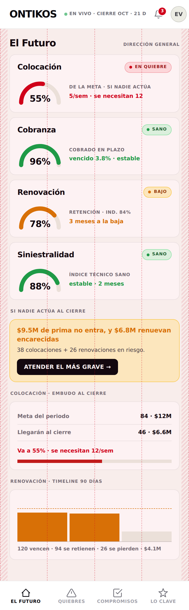
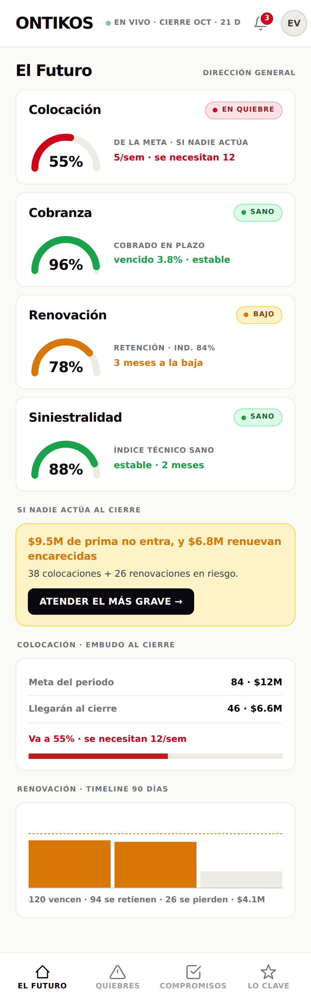
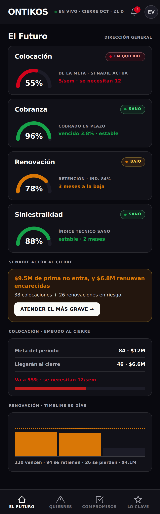
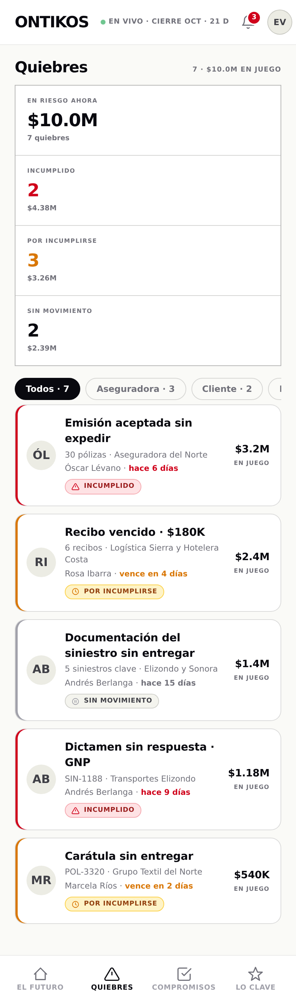
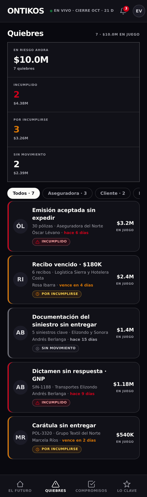

Paso 3. El acto, el contenido y la semántica del color no se tocan: aquí sólo se dibuja cómo se compone la casa en el teléfono.
El móvil usa el arsenal de la casa probado en Cash Market y Middle Market. La grilla sigue la de Carbon para pantalla chica, citada con su fuente verificada en el MCP. Toda decisión de composición que se apoya en Carbon lleva su cita; lo que es de la casa o pieza nueva, se marca. El criterio de cabecera de Carbon no se adopta: la cabecera es la de la casa.
Tres zonas. La cabecera arriba y la navegación abajo quedan fijas; sólo la superficie se desplaza. Las hojas suben desde el borde inferior. Cada número abajo es una decisión del marco.
La .appbar de Cash Market se fija arriba y respeta el safe-area de la isla o el notch. Lleva la marca, EN VIVO·CIERRE, la campana, el avatar y la puerta de salida.
A la derecha de la marca, sobre .clock/.cdot, con sus tres estados: vivo (verde que late) · por cerrar (ámbar) · cerrado (neutro, nunca rojo). Es el pulso del periodo, siempre a la vista.
Entre cabecera y navegación. El contenido entra con relleno 16 (ver §2). Cada superficie es un compromiso: lee del modelo y termina en un acto.
La .bnav de Cash Market, con las cuatro superficies —El Futuro · Quiebres · Compromisos · Lo clave— y el activo en TINTA, no en rojo: el rojo queda reservado al quiebre. Respeta el safe-area de abajo.
El detalle o el acto de una entidad se abre en la hoja .modal de CM con grabber, pegada al borde inferior —no un slide-over lateral—. Toma la altura de su contenido.
La fila de quiebre .vd-cli, el tile .kpi, las pills de filtro y el ícono de la nav son cómodos al pulgar. La fila entera es el objetivo, no un enlace diminuto.
La hoja baja con el grabber o arrastrándola; los filtros y las pills se deslizan en horizontal cuando no caben. Nada de gestos inventados: sólo los que CM ya trae.
Cuatro columnas, relleno 16, margen 0, sin canalón. Es la grilla de Carbon para pantalla chica, y coincide con la regla de la casa: relleno siempre 16 en todo punto de quiebre, el tipo contra el relleno, nunca sobre él. El dibujo muestra las columnas sobre El Futuro, con las líneas clave visibles.

Fuente · Carbon 2x Grid · Breakpoints (verificada en el MCP): tabla Small = 4 columnas, relleno 16 px, margen 0.
/foundations/2x-grid/overview/#breakpoints
Por qué cuatro. «The four column layout is the backbone of most IBM experiences … product UIs rely heavily on the four column structure to ease users into denser content.»
/foundations/2x-grid/guidelines/#four-columns
Casa · vara §3. «Relleno siempre 16 px en todos los puntos de quiebre. El tipo va contra el relleno, nunca sobre el relleno.» La grilla de Carbon Small y la regla de la casa coinciden; no hay que elegir.
Líneas clave visibles. El filo de cada tarjeta cae en el relleno; las cuatro columnas alinean el arco, el título y la pastilla de salud. Las bandas rayadas de los bordes son los 16 px de relleno donde el tipo se detiene.
El Futuro y Quiebres armadas con las formas del catálogo, según la gramática. Mismo contenido que el escritorio; sólo cambia la composición. Cada forma trae su procedencia. En claro y en oscuro.
Las cuatro líneas estratégicas como recintos, cada una con su arco y su salud. La barra de decisión remata en el acto. El embudo y la renovación, en barra y en tendencia.


Los indicadores en rejilla arriba —el héroe en tinta, los conteos en su estado—. Los filtros deslizan. Cada quiebre es una fila .vd-cli: el filo lleva la situación, el peso va a la derecha en tinta, la pastilla con ícono dice en qué estado está.


Ninguna forma trae color propio. El dinero va en tinta salvo que lleve un estado: por eso el peso del quiebre y el héroe $10.0M van en tinta, y el rojo queda para el incumplido, el ámbar para lo por incumplirse, el neutro para lo sin movimiento. Cada estado se distingue por forma —la pastilla, el filo, el ícono— además del matiz. El activo de la navegación va en tinta, no en rojo. En oscuro, el rojo de texto usa su variante AA.